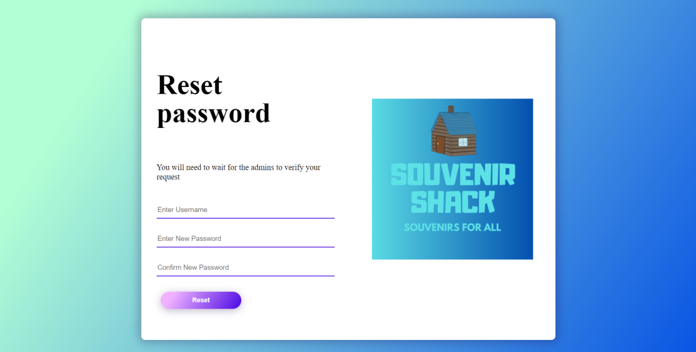
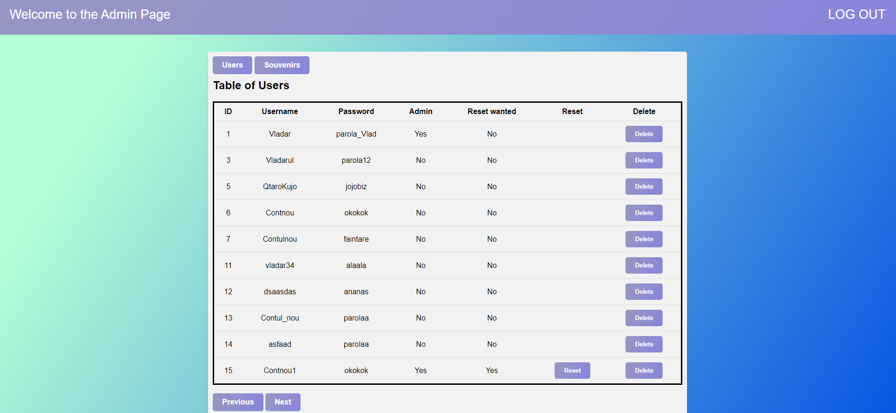
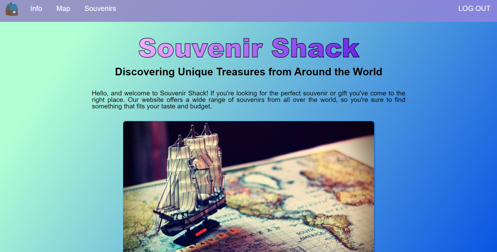
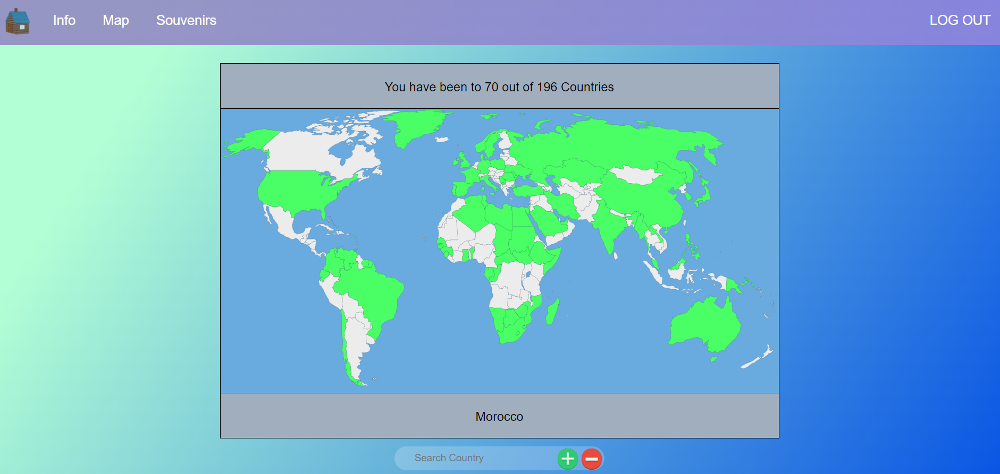
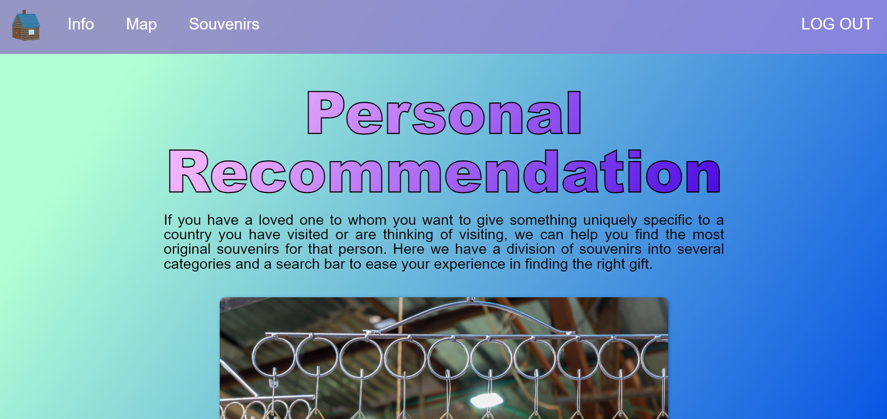
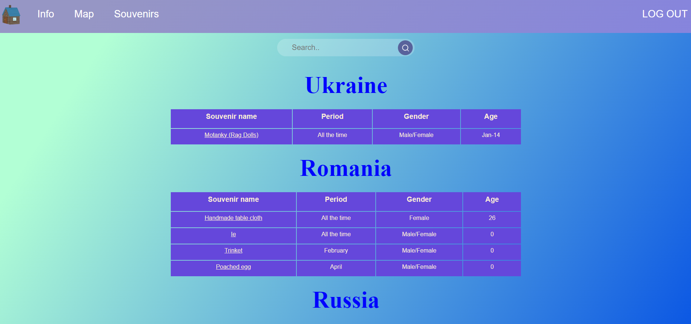
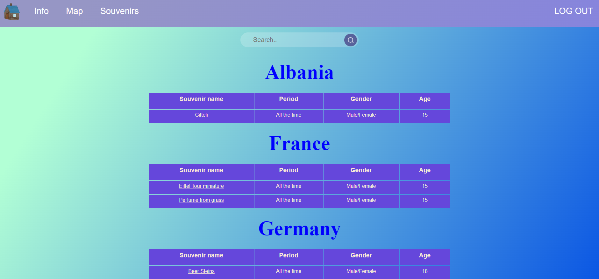
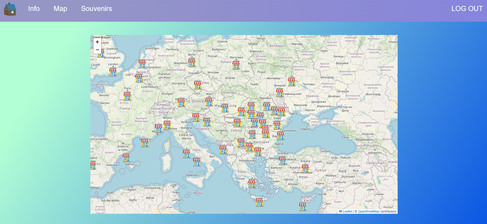

The purpose of this document is to present in detail the web application Souvenir Shack based on the project SoRe.
This page will explain the scope and features of the software, as well as it's interfaces, functionalities and
constraints.
Users of this website are free to use this document as a source of information.
1.2 Document Conventions
This document was created based on the Scholarly HTML document format and IEEE template for System Requirement
Specification Documents.
1.3 Intended Audience and Reading Suggestions
The users intended to use this web application are any users who wish to use the site for informing about the
perfect souvenirs and gifts for their co-workers, friends and family.
If they wish, they can use this document as a tutorial for the site but this is only optional.
1.4 Product Scope
Souvenir Shack has been developed for the purpose of helping the users find the most fitting souvenirs for the
people in their life,
depending on where they traveled or want to travel.
1.5 References
In order to create the web application and this document we did a research on CSS and HTML and also on security related sites which are
shown below:
W3schools - used for designing some CSS and HTML divs
OWASP - used for obtaing better SQL injection proof and XSS proof
2. Overall Description
2.1 Product Perspective
Souvenir Shack offers a wide range of souvenirs from different countries with different cultures.
The site is easy to use and presents an unique concept that is very hard to find online for a website.
2.2 Product Functions
The application has different functionalities and properties like:
a sign in/sign up system in order to save each user's preferences
the possibility to reset your password if an admin permits it
an admin page ment for giving privileged users the ability to modify the database
a navbar that permits the users to easily access the pages of the site
a method to add where the user has traveled which will be shown on an interactive map
a cartographic map that contains the location of souvenir shops all over the world
the possibility to search for souvenirs depending on categories like recommended age, popularity or where you
traveled
the possibility to access all the souvenirs and their information stocked in the database
2.3 User Classes and Characteristics
The users which are intended to use this website really are all the people looking for unique and attractive
souvenirs, but
it is especially recommended for the ones who are visiting or plan to visit a country and want to make an
impression on their loved ones.
2.4 Operating Environment
The web application can be used on any working device with a web browser and internet connection.
2.5 Design and Implementation Constraints
Souvenir Shack is designed using HTML, CSS, JavaScript and and will has a server made in Java that uses
a REST API to communicate with the front and also a
database created in SQLite.
3. External Interface Requirements
3.1 User Interfaces
Souvenir Shack's Sign in pageSouvenir Shack's Sign up pageSouvenir Shack's Reset password page

Souvenir Shack's Admin page

Souvenir Shack's Info page

Souvenir Shack's Map of the world page

Souvenir Shack's Souvenirs general info page

Souvenir Shack's Souvenirs personal recommandation page

Souvenir Shack's Souvenirs general recommandation page

Souvenir Shack's Map of souvenir shops page

3.2 Hardware Interfaces
The devices which will support the website just need an working browser and internet connection.
3.3 Software Interfaces
The application has a SQLite database and a Java server which communicate with the interfaces using
a REST API. Also a public cartographic service is used for the souvenir shops map, using Leaflet and OpenStreetMap.
3.4 Communications Interfaces
The communication standard that Souvenir Shack uses is HTTP and establishes a unique session based connection.
The souvenir list is saved in documents formatted CSV, XML, JSON and also in the database, along with
the countries and other relevant data.
4. System Features
4.1 Sign in page
Users which already have an account on the app can login by entering their credentials (which can be saved with
the 'remember me' option) and access the informations of the site.
Otherwise, users cand read a little about the site and click on the 'create your account' button.
4.2 Sign up page
Users who wish to create an account in order to have access to the site can enter the desired credentials and
if they are not taken, a new account will be created for the user's use.
4.3 Reset password page
This page will facilitate the users with the option to request for their password to be reset.
4.4 Admin page
Only admin delegated users can access this page and they will have access to the whole users and souvenirs tables in the database,
also having the option to delete some records or permit user password resets.
4.5 Info page
This page will present general information about the website and what the users can expect to do using it.
4.6 Map of the world page
Users accessing this page can set the countries where they have traveled so
that not only they will have a representation of the places they have been,
but also they will receive personalized recommendations depending on what
is selected.
4.7 Souvenirs general info page
This web page has a description about the personalized recommendation and general recommendation pages. This will
help the users
to easily accommodate with the interfaces and their functionalities.
4.8 Souvenirs personal recommendation
Users using this feature will have a list of souvenirs displayed depending on factors like:
the visited countries selected which show his preferences
they can search through the list and find specific elements
4.9 Souvenirs general recommandation
Users using this feature will see the whole list of souvenirs saved in the database and can search and view where
and in what period of time
are the souvenirs usually found, which categories of people usually like them, the age at witch they usually use them and a link where they can get them.
4.10 Souvenir Shops Map
This page will show an interactive map which will point out many souvenir shops across the globe.
5. Other Nonfunctional Requirements
5.1 Performance Requirements
The web application uses a thread connection pool and also a database connection pool in order to
speed up the interactions for the users and also can support multiple events from different users at once.
5.2 Safety Requirements
The website is constraining and validating the inputs of the logins and also
warns the users when their chosen inputs cause a problem, don't respect the needed formats
or notifies them when the action has succeeded.
5.3 Security Requirements
The web application has SQL injection and XSS proof methods implemented, like
opting for PreparedStatements and having a session based login.